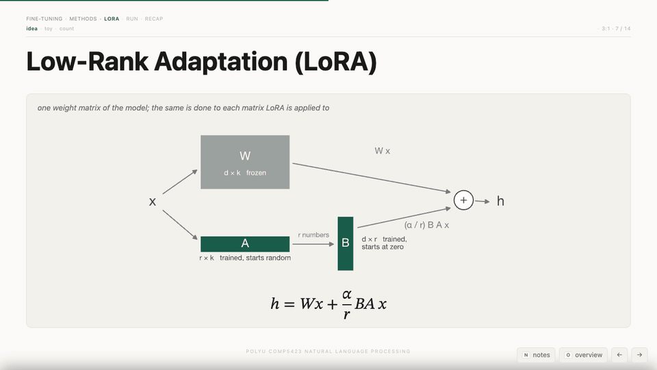
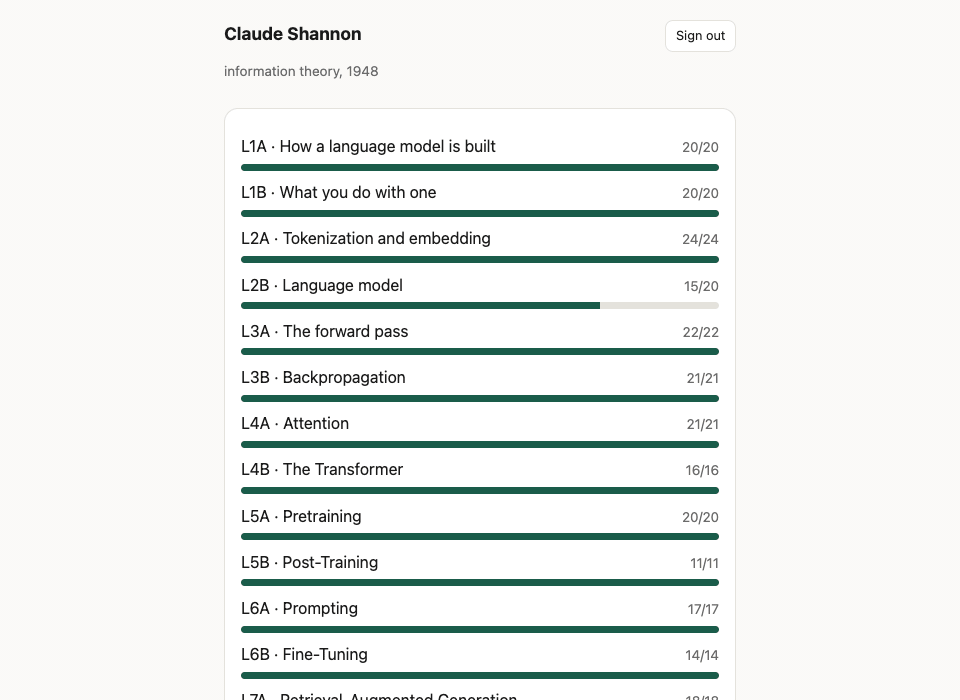
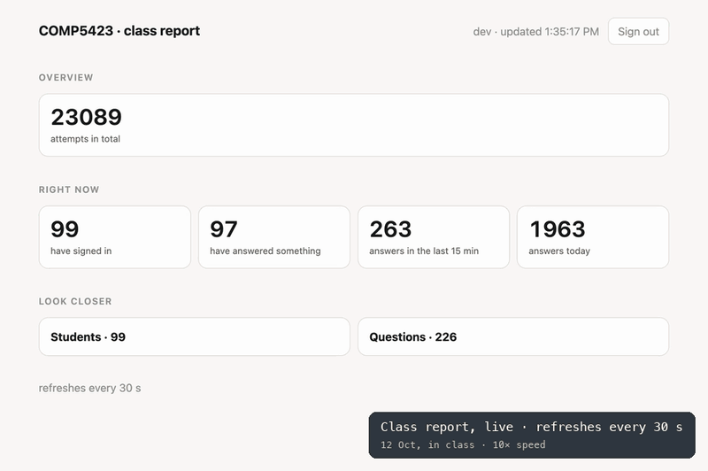
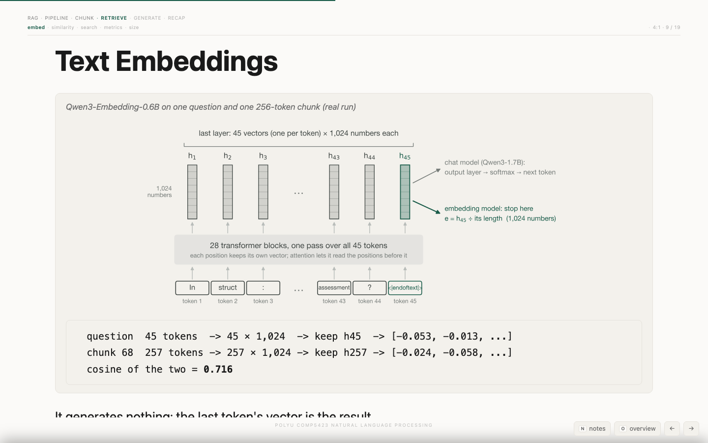
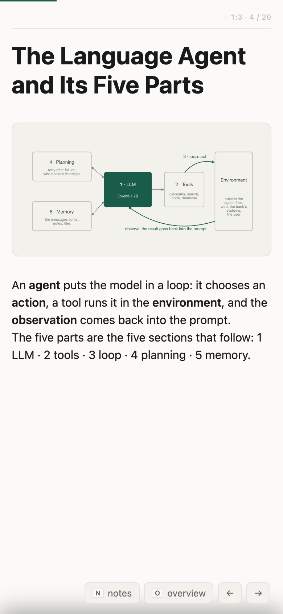
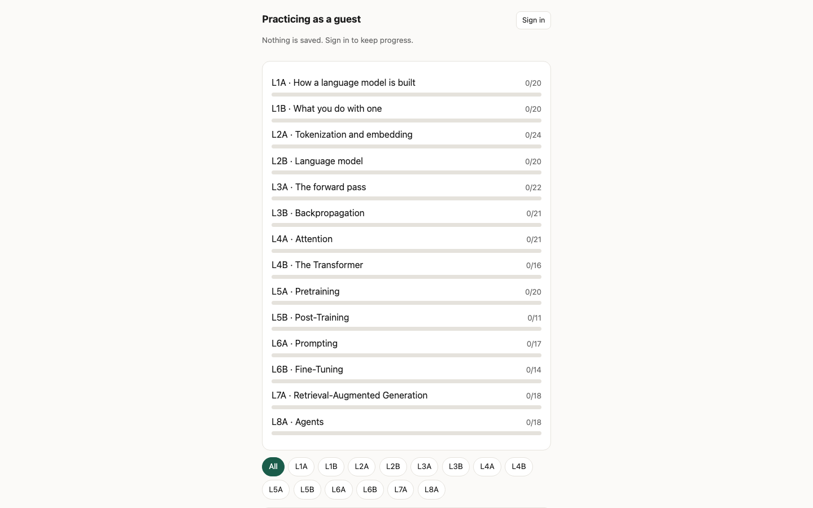
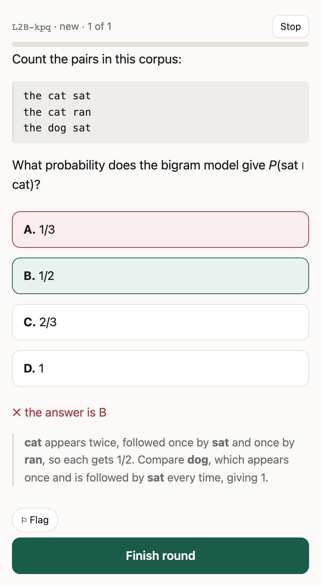

COMP5423 Natural Language Processing · Fall 2026 · a pilot toward PolyU Education 4.0
AI is a paradigm shift, for what we teach and for how we teach it. PolyU Education 4.0 (E4.0) initiative calls for an AI-empowered, student-centred learning and teaching model that envisions a future where technology supports interactive, flexible, and personalised learning. This COMP5423 course is one pilot toward that vision: this term the whole course was redesigned from scratch with an AI agent.
Interactive
Step 1 · LectureTeaching with web pages instead of PowerPoint.

Step 2 · PracticeLearning by doing.

Step 3 · ReviewReinforce the teaching with the hard questions.

Flexible
The slides and the workbook are plain web pages. They open on a laptop or a phone, in class or on the bus, with nothing to install.




Hands-on
Training an LLM from scratch: every student builds a small GPT and trains it on 24,000+ Tang poems, until it writes poems of its own.
春風吹雨不勝愁，深院無人更上樓。
若道此時相憶處，夜來還夢到揚州。
by James Flanagan's model · rated 5.00 out of 5
一別巫山後，相思三五秋。
空悲昨夜夢，已盡不勝愁。
by Danny Cohen's model · rated 5.00 out of 5
江上人稀日日長，一聲清磬落殘陽。
只應惆悵南朝事，一半離腸一夜長。
by James Flanagan's model · rated 5.00 out of 5
一自潺湲水，還知獨自全。
雨餘千嶺雪，寒近五湖天。
泬早秋霜在，蕭蕭遠岫偏。
寒光臨水沼，秋色滿城天。
by James Cooley's model · rated 5.00 out of 5
江上梅花已易開，人間花事不知回。
海棠總向人間色，一曲寒枝我自來。
by Paul Baran's model · rated 5.00 out of 5
AI-empowered